About
NOI SUNTEM
TEDx PARCUL TINERETULUI
Departamentul de Fundrasing
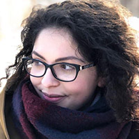
Arianna Suduc
Numele meu este Arianna Suduc și mă caracterizez ca fiind un #doer. Pasionată de munte și de frumos, mi-am găsit dintotdeauna locul în proiectele de voluntariat. TEDx reprezintă, pentru mine, calea către cunoaștere ori, poate și mai important, către autocunoaștere. Cred într-o Românie a schimbării, a binelui, a bunului-simț și nu în ultimul rând, cred în oameni. Oameni care vor să facă ceva și muncesc constant pentru a ajunge unde își doresc, unde le e locul.
Alin Ana
Numele meu e Ana Alin și mi-a plăcut dintotdeauna realitatea așa cum este ea. Nu m-am regăsit nicicând în metafore subliminale, dar nu pot să nu apreciez simplitatea și totodată puterea cuvântului. TEDxParculTineretului mă găsește pasionat de antreprenoriat, leadership și Oameni care fac lucrurile ca la carte. Voluntar în cadrul proiectelor locale, mă identific ca fiind în permanență căutare de nou, proaspăt, în căutare de altceva. Asta cred că e și experiența TEDx – o unicitate în viață, ceva ce trăiești fie când trebuie, fie nu mai trăiești deloc.
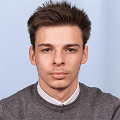
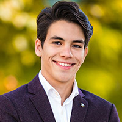
Mihai Constantin
Numele meu este Mihai Constantin și sunt unul dintre liceenii al cărui vis a fost acela de a avea o ediție de TEDx în Piatra Neamț. Sunt pasionat de antreprenoriat și speaking, îmi place să voluntăresc cât de des pot și nu sunt la prima „abatere” în acest domeniu, astfel că am încredere în mine și în echipa mea că vom creiona o ediție grozavă a TEDxParculTineretului.
Dionisie Lungu
Mă numesc Dionisie Lungu-Ailenei, am 20 de ani și studiez informatica. Cred într-o lume mai buna, și în schimbare, de aceea sunt entuziasmat să fac parte din echipa ce organizează acest eveniment. Opinia mea despre educație e că nu ar trebui să fie doar la nivel instituțional, dar și la nivel personal, de aceea sunt pasionat de muzica, citit și dans.
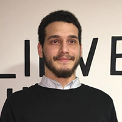
Departamentul Vizual
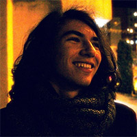
Matei Radu
Mă numesc Matei Radu, sunt pasionat de inginerie, design și informatică și sunt aici ca să rezolv orice problemă tehnică sau logistică și să creez concepte grafice pentru materialele promoționale sau informaționale. Prefer adesea să lucrez în liniște, concentrat la un singur lucru pentru ore în șir. Cel mai bine lucrez când subiectul are o importanță profundă pentru mine, iar munca rezultă într-un produs final concret.
Antonio Pavăl
Bună tuturor, numele meu este Antonio Pavăl, învăț la Colegiul Național „Calistrat Hogaș”, elev în clasa a 9-a. Pot spune despre mine că sunt o fire comunicativă, iar de-a lungul timpului am dezvoltat această trăsătură prin diversele voluntariate în care m-am implicat: cu scop caritabil alături de asociația Volunteer for life, Filmul de Piatra, Bloggers Lan Party 2018, Tare ca piatra, în clubul Interact din Piatra Neamț și multe altele. Pot spune că mi-am atins obiectivul de a deveni fotograf și mă bucur foarte mult de acest lucru. Vă aștept cu drag la ediția TEDx pe 13 aprilie!
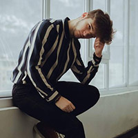
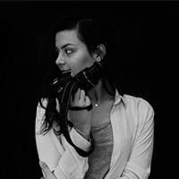
Dana Popa
Mă numesc Popa Daniela sau Dana, după cum prefer să mă recomand. Sunt pasionată de lumea artei, istorie și sunt dornică să fiu mereu acolo când este nevoie de o mânâ de ajutor. În cadrul TEDxParculTineretului sunt coordonator foto. Am la activ mai multe funcții de redactor șef al revistelor și al ziarului pe care le realizez în cadrul colegiului din care provin. Am adunat experiență și din cadrul locurilor în care am fost voluntar dintre care menționez edițiile 2017 și 2018 de la Filmul de Piatra, ediția din 2017 de la Piano Music Fest și Festivalul de Teatru „Pledez pentru tineri”, Mic-ro Laborator de creație teatrală, precum și evenimentele organizate de către tinerii pietreni.
Curatori
Cristina Apopei
Se iau trei ingrediente: altruism, curaj și echilibru, și rezult eu. Sunt o adolescentă de 17 ani, un voluntar ager în gândire, foarte bine organizat și capabil, tolerant și sârguincios. Am un talent înnăscut de organizator și dovedesc asta în toate activitățile pe care le realizez. Fiind lider al unei echipe (AlternActive Academy) de organizare și coordonare a județului Neamț, îmi exercit funcția cu îndârjire, dovadă stând zecile de feedback-uri pozitive oferite de participanții la proiectele coordonate de mine.
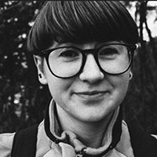
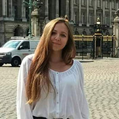
Bianca Hogea
Întotdeauna am avut sentimentul acela bine-cunoscut de a "face ceva util" - ceva util pentru cei din jur, dar și pentru mine. Nu îmi place sa folosesc expresia "a pierde timpul", întrucât mereu am încercat să investesc cât mai multe resurse în activități de voluntariat și proiecte educaționale, civice, artistice etc. Astfel, deschiderea față de oameni și față de dezvoltarea societății a reprezentat pentru mine o prioritate încă din primul an de liceu în care am început să mă implic activ în proiecte/evenimente locale, dar și naționale.
Theodora Musceleanu
Numele meu este Musceleanu Theodora. Voluntariatul este o pasiune pentru mine. Activând în domeniul artei de mai bine de 10 ani, taberele și proiectele m-au învățat importanța lucrului în echipă. Momentan sunt eleva la Colegiul Național de Informatica, sperând ca în viitor voi ajunge la facultatea de medicina. Propunerea primită pentru a ajuta la organizarea ediție TEDxParculTineretului a fost o surpriza plăcută fiind o admiratoare a organizației.
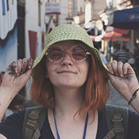
Departamentul de Promovare
Roxana Bobric
Numele meu este Roxana Bobric și consider că naturalețea și seriozitatea sunt calitățile mele principale. Sunt un autodidact, îmi place să-mi testez limitele și să fiu o optimistă în timpul liber. Mă pasionează cărțile, teatrul, îmi place să mă implic în activități școlare, extrașcolare și voluntariate. Am început cu asociația Together Everyone Achieves More, și curând au urmat voluntariate ca Școala Curioșilor, Piatra Peste Vale sau Intercross, în prezent fiind voluntar la Teatrul Tineretului.Îmi place să fiu în contact cu oamenii, să ascult și să pun zâmbete pe fața celorlalți.
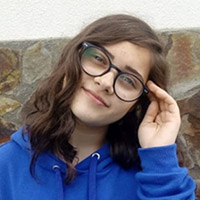
Translator
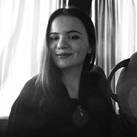
Andra Chirileasa
Numele meu este Andra Chirileasa și îmi place să scriu, să mă simt mai împăcată față de mine însumi. Îmi plac cuvintele mici cu impact mare, cuvintele frumoase și sincere. Iubesc oamenii care iubesc, care mă fac să cred că într-adevăr, se poate să fim mai buni. Pentru mine, TEDxParculTineretului este cu și despre oameni care inspiră prin încrederea lor în bine, că poveștile pot avea, până la urmă, un happy ending.